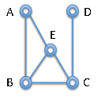
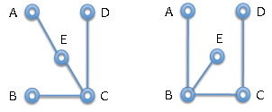
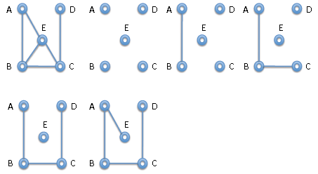

Kita mulai dengan graf tanpa arah yang terdiri dari satu set V simpul (juga disebut node) dan satu set E tepi, masing-masing menghubungkan dua simpul yang berbeda. Sebuah graf terhubung jika kita bisa mencapai titik apapun dari setiap titik lainnya dengan mengikuti tepi di kedua arah. Dalam graf berarah tepi memberikan koneksi dari satu node ke yang lain, tetapi belum tentu di seberang arah. Lebih matematis, kita mengatakan bahwa hubungan antara tepi simpul simetris untuk grafik tanpa arah.
Berikut ini adalah contoh sederhana dari graf terhubung tanpa arah dengan 5 simpul (A, B, C, D, E) dan 6 tepi (AB, BC, CD, AE, BE, CE).
Pohon adalah adalah graf terhubung tanpa siklus. Sebuah pohon rentang untuk graf terhubung G adalah pohon yang mengandung semua simpul dari G. Dibawah ini adalah dua contoh pohon merentang.

Ada banyak algoritma yang dapat digunakan untuk mencari pohon rentang graf terhubung.
Yang pertama adalah contoh dari vertex-centric algorithm.
1. Pilih sebuah simpul sembarang dan tandai.
2. Ulangi sampai semua node ditandai :
(a) Pilih sebuah simpul u sembarang di pohon dengan tepi e ke titik w yang
tidak ada di pohon. Tambahkan e ke spanning tree dan tandai w sebagai pohon.
Kita lakukan langkah 2 sebanyak n-1 kali, karena ada n-1 simpul yang harus
ditambahkan ke pohon. Efisiensi algoritma ditentukan oleh seberapa
efisien kita bisa menemukan kualifikasi w.
Algoritma kedua adalah edge-centric algorithm.
1. Mulailah dengan koleksi pohon tunggal, masing-masing dengan tepat satu simpul.
2. Selama kita memiliki lebih dari satu pohon, hubungkan dua pohon bersama-sama
dengan tepi dalam graf.
Algoritma kedua ini dilakukan sebanyak n kali, karena memiliki penambahan n-1
tepi ke pohon sampai kita memiliki spanning tree. Efisiensi ditentukan
oleh seberapa cepat kita bisa mengetahui apakah tepi akan menghubungkan dua pohon
atau akan menghubungkan dua node sudah di pohon yang sama.
Mari kita coba algoritma ini pada graf pertama di atas.
Graf pertama adalah graf yang diberikan, graf yang terputus sempurna adalah titik mulai untuk algoritma ini. Pada graf di bagian bawah kanan spanning tree telah selesai, karena telah ditambahkan n - 1 = 4 tepi. Jika kita mencoba untuk melanjutkan, tepi berikutnya BE tidak dapat ditambahkan karena tidak menghubungkan dua pohon, dan tidak CE juga tidak bisa. Spanning tree selesai.